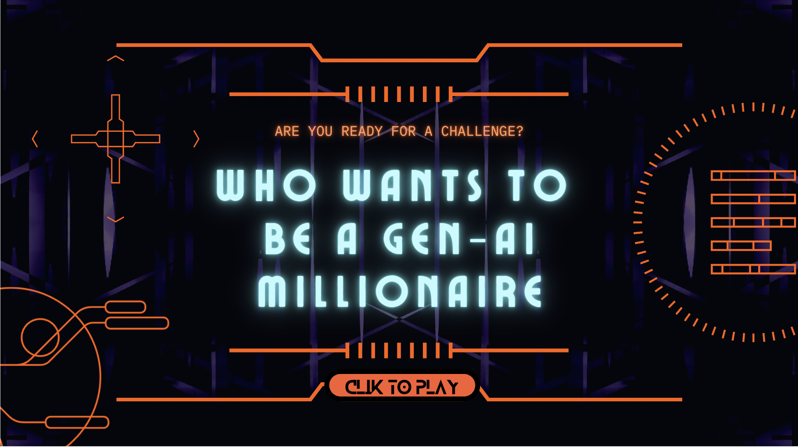

LIFELINES
üîä
30s
Question 1 of 13
$100
Loading question...
Select an answer to confirm.
Final answer?
You selected: A
Game Over
You won $0
üèÜ GenAI Wizard Award üèÜ
This certifies that
Player
Has achieved AI Mastery with winnings of
$1,000,000
Date:
GenAI
Knowledge
Series
Knowledge
Series